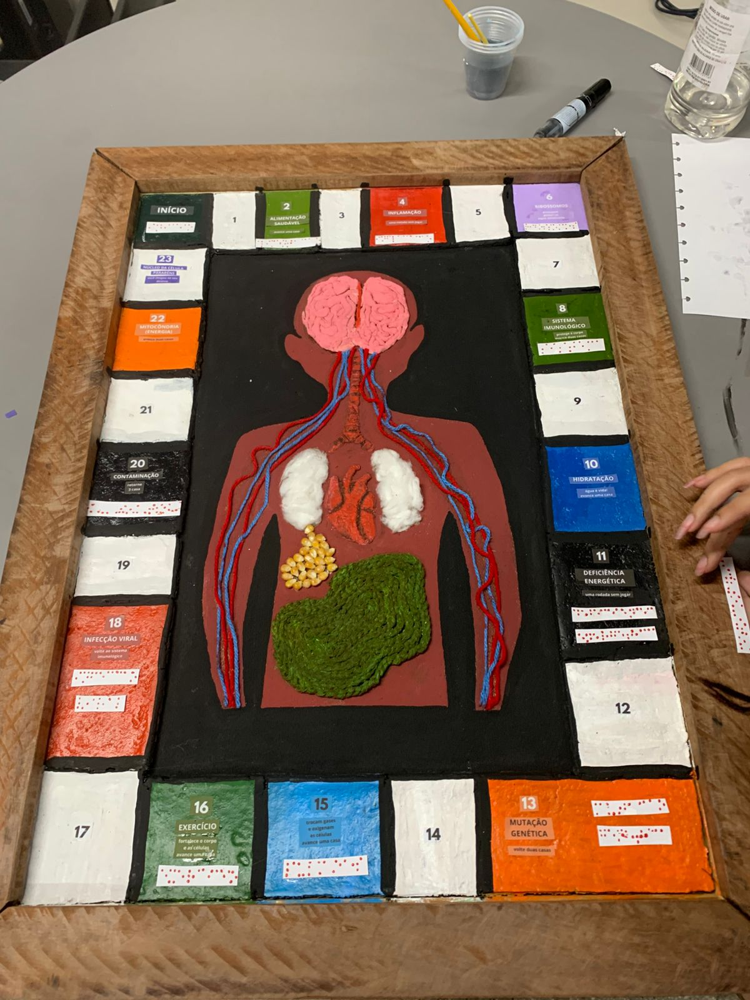
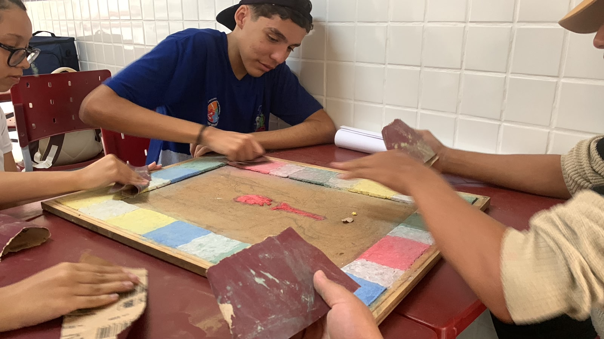
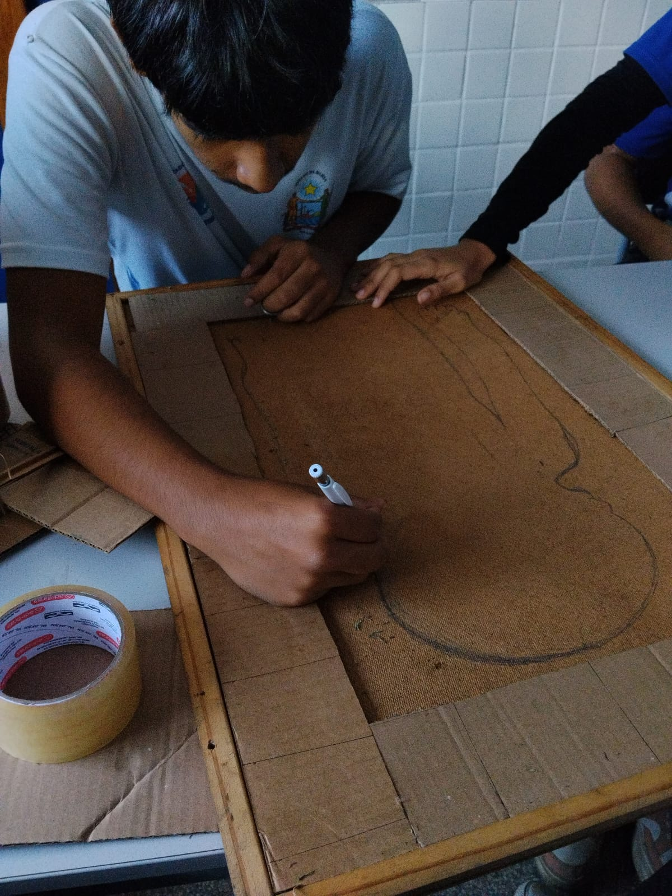
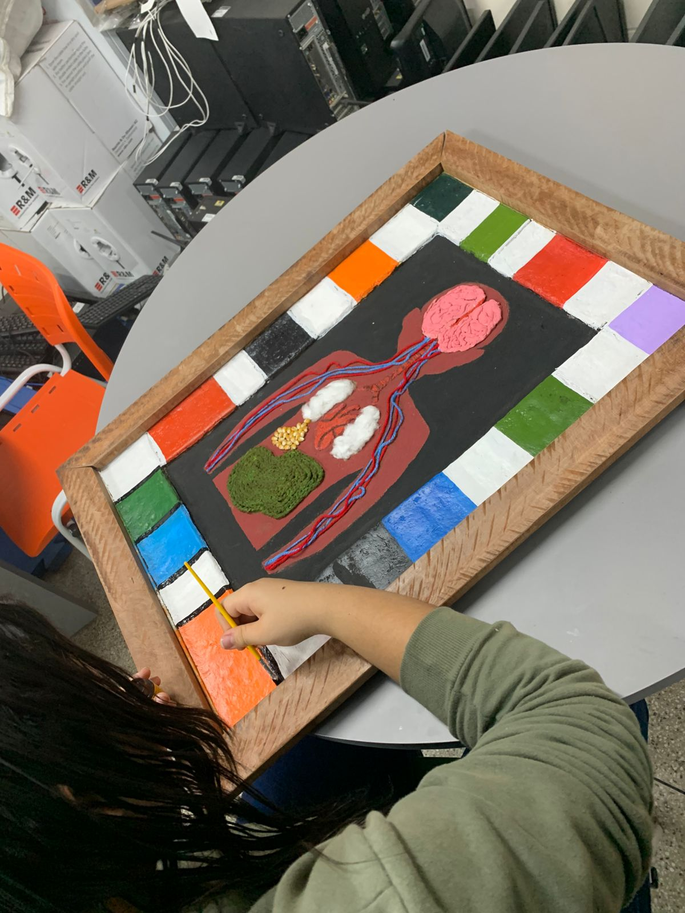
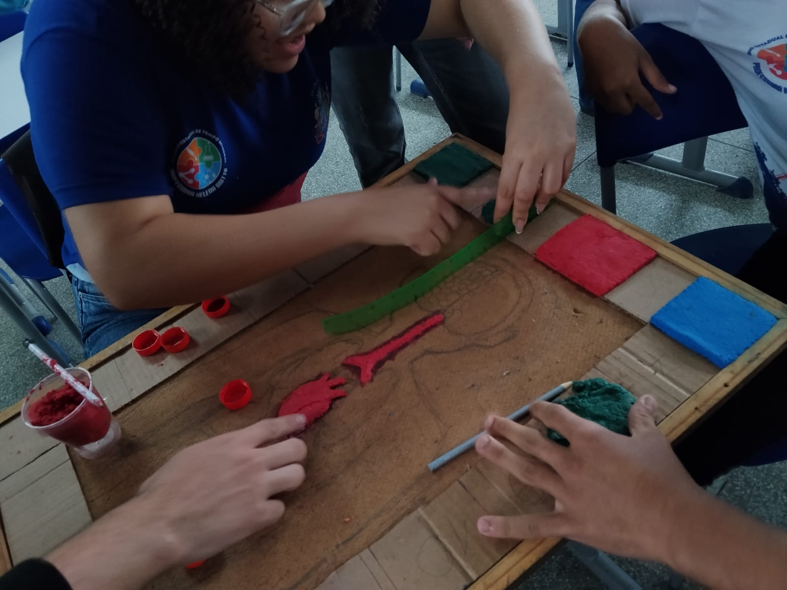
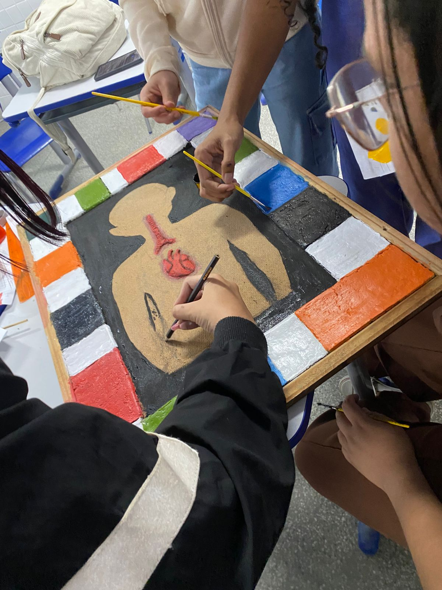

Aprendizado ativo
O conteúdo sai do papel e vira uma experiência de observação, toque, descoberta e conversa.
Projeto de Biologia | 1º EPI RH
Um tabuleiro sensorial feito para transformar biologia em uma experiência acessível, visual, tátil e criativa.
Role para explorar


Proposta
O projeto foi criado para tornar o estudo das células mais acessível, inclusivo e divertido, respeitando diferentes formas de aprender.
O conteúdo sai do papel e vira uma experiência de observação, toque, descoberta e conversa.
O tabuleiro apresenta hábitos saudáveis e fatores que podem prejudicar as células, como infecções e contaminações.
Braille, contraste visual e materiais com relevo ajudam mais estudantes a interagir com o mesmo conteúdo.
Como funciona
Os participantes avançam pelo tabuleiro passando por situações ligadas à saúde das células. Casas positivas representam alimentação equilibrada, hidratação e exercícios físicos. Outras casas mostram riscos como inflamações, mutações, infecções e deficiência energética.
Galeria

foto-1.jpg
foto-2.jpg
foto-5.jpgAcessibilidade
A experiência foi pensada para que pessoas com deficiência visual também possam participar da aula por meio do tato e da leitura em braille.
Marcações táteis ajudam na leitura das casas e desafios.
Algodão, milho, papel machê e linhas tornam o tabuleiro sensorial.
Cores fortes separam hábitos saudáveis, riscos e estruturas celulares.
Sustentabilidade
O projeto mostra que um material didático completo pode nascer de recursos simples, recicláveis e reaproveitados.
Créditos
Projeto visual e desenvolvimento do site por Alexandre. GitHub: zeus123-e.
Direção
Material de estudo: Tabuleiro Sensorial. Turma: 1º EPI RH.